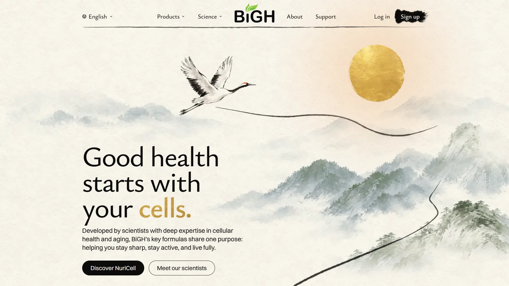
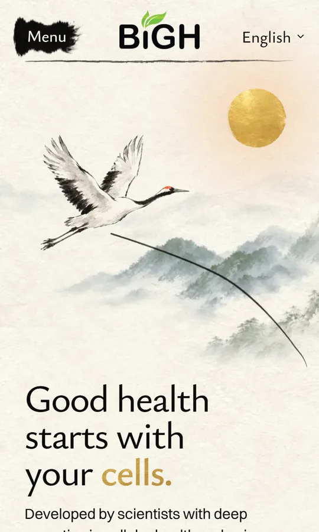

C (half size) is live and looks a little too small. Here is a size between B and C. Real screenshots of the homepage, taken after the crane's two wingbeats, when it rests. Only the crane changes; its brush line moves with it. Tap a size; the pictures below switch.

